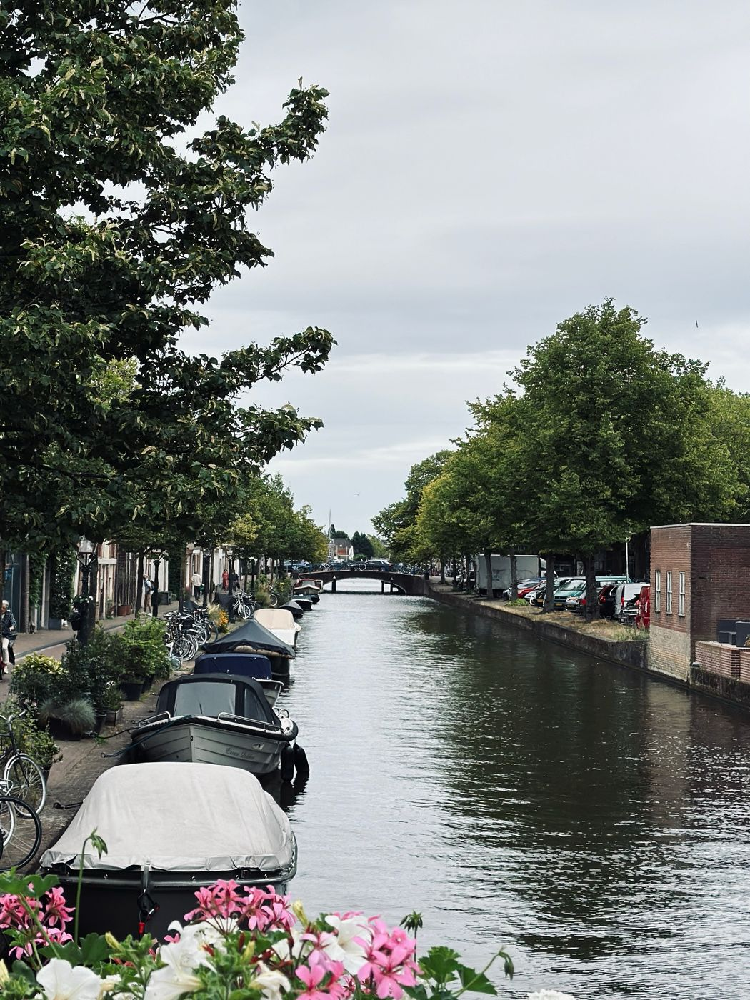
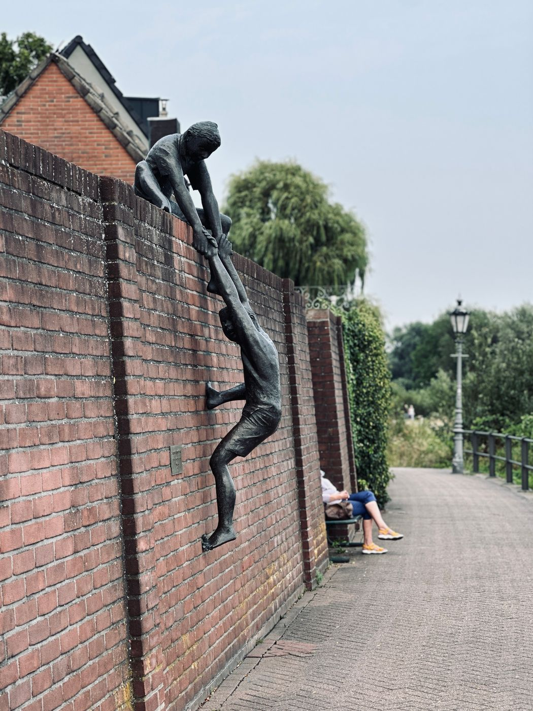
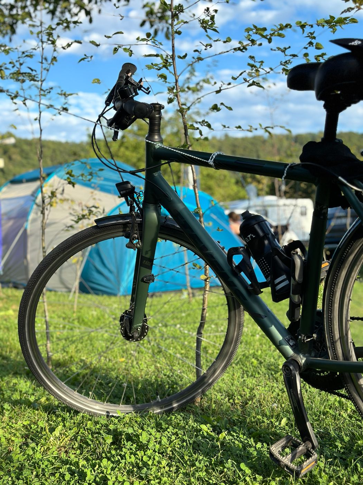
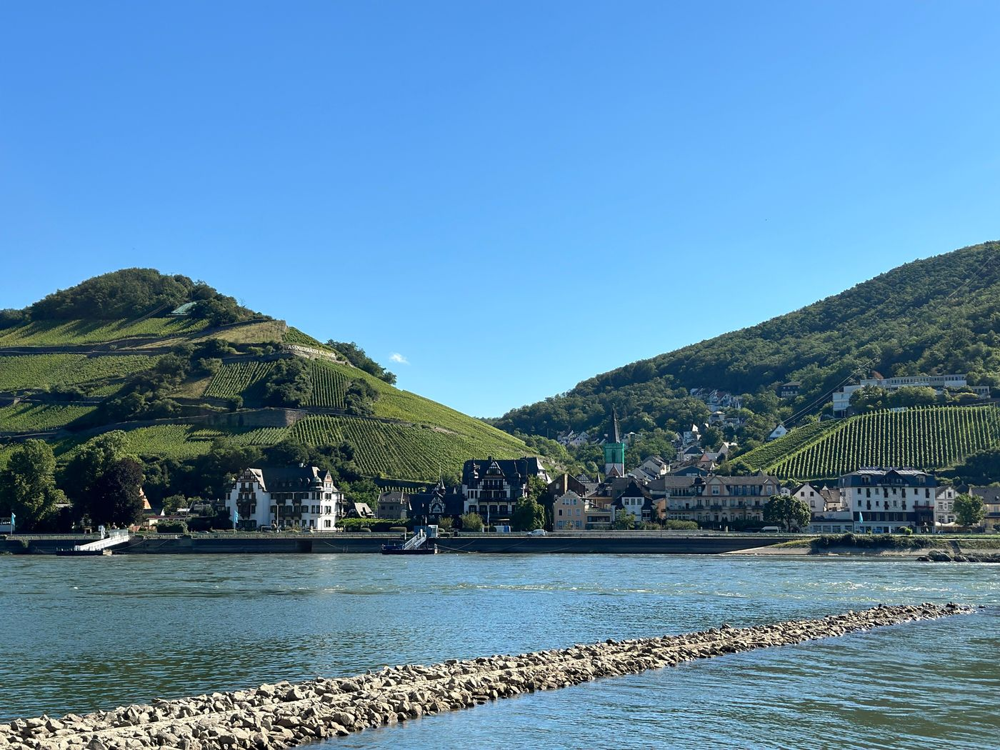

Heidelberg to Amsterdam by bike · August 2024 · ten days · about 750 km
| Day | Date | Route | km |
|---|---|---|---|
| 1 | 14 Aug | Heidelberg → Biebesheim | 59 |
| 2 | 15 Aug | Biebesheim → Rüdesheim | 76 |
| 3 | 16 Aug | Rüdesheim → Koblenz | 72 |
| 4 | 17 Aug | Koblenz → Bad Honnef | 86 |
| 5 | 18 Aug | Bad Honnef → Düsseldorf | 98 |
| 6 | 19 Aug | Rest day in Düsseldorf | 10 |
| 7 | 20 Aug | Düsseldorf → Isselburg | 99 |
| 8 | 21 Aug | Isselburg → Utrecht | 122 |
| 9 | 22 Aug | Utrecht → Leiden | 71 |
| 10 | 23 Aug | Leiden → Amsterdam | 54 |
| Total | 747 | ||